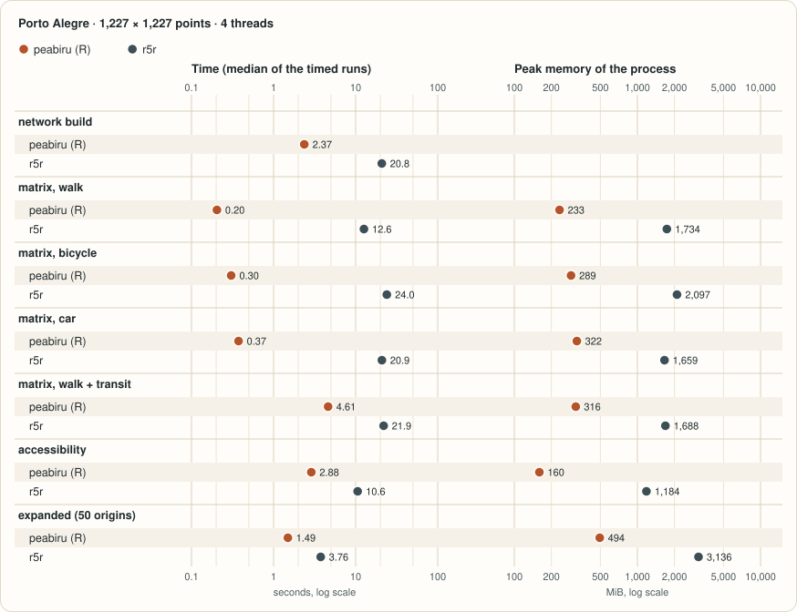
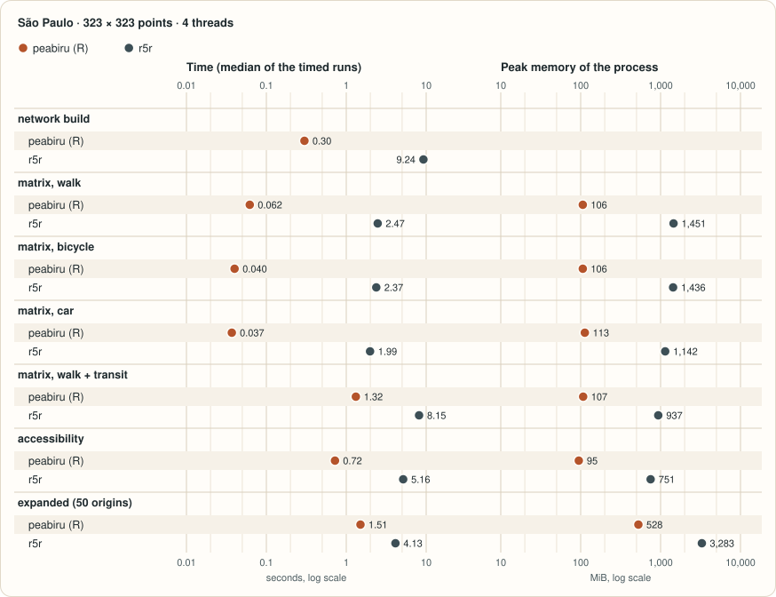

r5r (Pereira, Saraiva, Herszenhut, Braga and Conway, 2021) is the R package that drives Conveyal’s R5 routing engine on Java. peabiru is an independent package with an engine of its own, written in Rust, that implements the same routing model, R5’s. This is the one page of the documentation that compares the two: what they share, how the results are checked against each other, every difference, and how to move a script over. The same comparison, in the terms of each language, is on the Python and JavaScript sites.
What the two share
-
The routing model. peabiru’s engine is a port of R5
7.6, the engine r5r 2.5.0 drives: the same street and public transport
model, the same rules for linking points and stops to streets, the same
Monte Carlo draws for frequency-based feeds, the same levels of traffic
stress for cyclists, the same multi-criteria router (McRAPTOR) for fares
and alternatives, the same rule-based fare calculator (R5’s
RuleBasedInRoutingFareCalculator), the same checks of the GTFS feeds (those of gtfs-lib, R5’s GTFS library). -
Function and argument names. Of the 22 functions
r5r 2.5.0 exports, 17 exist in peabiru under the same name, with the
same arguments in the same order and the same defaults; the other five
manage Java and have no place here (see Moving a script over). The differences
in the arguments are three: the network argument is called
network, notr5r_network; the deprecatedr5r_coreandsample_sizeare gone;build_network()hasn_threads. A check in the repository (bench/compare/testthat/test-formals.R) compares peabiru’s formals with a snapshot of r5r’s and fails on any other drift. -
Argument checks accept and reject the same values,
in the same order, with the same bounds and conversions (a factor
mode, a POSIXltarrival_datetime) and messages of the same wording, except that peabiru’s never name r5r (see “Errors” under Differences).bench/compare/error_parity.Rin the repository calls every function with invalid values of every argument in both packages and compares the errors. -
Results: the same rows, in the same order, with the
same column names, types and values. For a frequency-based feed this
needs the same
seed(without one, both packages draw from the clock and every run differs). Withoptions(peabiru.output = "data.table")the results also have the classes r5r gives them (see the class of the results under Differences).
Besides these, peabiru has functions of its own, which have no counterpart in r5r: trip_options(), and locate_facilities() and floating_catchment().
A comparison of the two on the same inputs looks like this (not run when this page is built; r5r needs a JDK 21 and the R5 jar):
options(java.parameters = "-Xmx2G")
# r5r writes its network.dat into the data directory: give it a copy
r5r_dir <- file.path(tempdir(), "spo")
dir.create(r5r_dir)
invisible(file.copy(list.files(data_path, pattern = "\\.(pbf|zip)$", full.names = TRUE),
r5r_dir))
r5r_network <- r5r::build_network(r5r_dir, verbose = FALSE)
options(peabiru.output = "data.table")
args <- list(origins = points, destinations = points,
mode = c("WALK", "TRANSIT"), departure_datetime = departure,
percentiles = c(25, 50, 75), seed = 42, n_threads = 2,
progress = FALSE)
from_r5r <- do.call(r5r::travel_time_matrix, c(list(r5r_network), args))
from_peabiru <- do.call(peabiru::travel_time_matrix, c(list(network), args))
# data.table's self-reference attribute is a pointer to the table itself
no_selfref <- function(x) `attr<-`(x, ".internal.selfref", NULL)
identical(no_selfref(from_r5r), no_selfref(from_peabiru))
#> [1] TRUE
options(peabiru.output = NULL)How parity is checked

The identical() comparison above is how parity is
tested. The comparison is not part of the package or of its tests: it
lives in the repository (bench/compare/, run by
tools/r5r_parity.R), where hundreds of such comparisons on
r5r’s Porto Alegre and São Paulo samples (matrices, accessibility,
expanded and arrival matrices, isochrones, itineraries, fares,
elevation, scenarios, network exports, edge cases) run against r5r 2.5.0
on Linux, Windows and macOS on every push to the main branch, and fail
on any difference or on any comparison that did not run.
“The same results” is meant literally: every travel time, every
accessibility value (as a double, to the last bit), every row of the
expanded and arrival matrices and of the itineraries, every vertex of
the isochrones, in the same order. This works because the engine is a
port of R5 7.6, the engine r5r drives, and follows its rules down to
details that only matter on ties: the order in which ways, feeds and
stops are read, which of two equal paths is kept, how lengths and speeds
are rounded, the random number generator behind the Monte Carlo draws (a
Mersenne Twister seeded from seed and the origin’s
coordinates, as in R5), and the exponential of the decay functions
(Apache Commons Math’s FastMath.exp, which R5 calls,
instead of the C library’s). Limits are R5’s too, such as the 5,000
destinations accepted by the expanded and arrival matrices.
Two things depend on the platform, in r5r as in peabiru, which follows the platform it runs on:
- The order of the GTFS feeds. R5 loads the feeds in the order in which the operating system lists the directory, and that order depends on the file system. On r5r’s Porto Alegre sample (two feeds), r5r on macOS and r5r on Linux give the same travel-time matrices and accessibility, but 227 of the 605,460 rows of the expanded matrix differ (another stop or route, a total time up to 0.2 minutes apart). peabiru matches r5r row for row on each platform.
- The rings of isochrone polygons. ‘isoband’, which r5r calls, walks a C++ hash table whose order decides where each ring starts and in which order the rings come; that order depends on the C++ library ‘isoband’ was built with (libc++ on macOS, libstdc++ on Linux and Windows). peabiru reproduces both.
Speed and memory
The two packages give the same results on the tasks below, so what is left to compare is what they cost. The charts show the time and the peak memory of peabiru’s R package and of r5r 2.5.0 on the same inputs and parameters, for the two sample cities, between all pairs of their grid points: the median of the timed runs, with 4 threads, in a container limited to 4 CPUs and 10 GiB on a Linux server (measured on 12 November 2026).


Both charts are drawn from the data of the benchmarks page, which has the method, the machine, the runs with one thread and the other packages measured.
Differences
Everything below is deliberate. Nothing that r5r accepts is silently ignored or computed differently: where peabiru does not give r5r’s result, it says so, with an error or with the warning described in the item.
General
-
No Java. There is no JVM to start, no
java.parametersto set and no R5 jar to download, so peabiru has none of r5r’s functions for them:setup_r5(),stop_r5(),download_r5(),r5r_cache()andr5r_sitrep()do not exist (see Moving a script over for what to write instead).
-
Results are tibbles by default, not
data.tables, andsfresults aresftibbles. The optionpeabiru.outputchooses the class, at each call:"tibble"(the default; ‘tibble’ is the package’s one dependency),"data.frame"(base data frames, plainsf) or"data.table", which gives the classes r5r returns:data.tables,sfdata.tables where r5r’ssfis one (isochrone polygons, itineraries, street edges, transit routes) and plainsfelsewhere, and the index r5r’sfind_snap()leaves onfound. It applies to every table, the tables of a fare structure included. The rows, the columns, their order and types, and the values do not depend on it.options(peabiru.output = "data.table") # r5r's classes
-
sfinputs in any coordinate reference system. r5r stops with an error on aPOINTsf(origins,destinations,points) or on scenario polygons or lines (new_carspeeds,new_lts) that are not in WGS 84. peabiru reprojects them withsf::st_transform()and says so in a message (classpeabiru_reprojected, one per argument; silence it withsuppressMessages()), naming the argument and the CRS. Ansfwithout a CRS is an error that says how to set it, and geometries that are not points where points are needed are refused as r5r refuses them. Results are always in WGS 84 (EPSG:4326).
pts_utm <- sf::st_transform(sf::st_as_sf(points, coords = c("lon", "lat"), crs = 4326),
31983) # SIRGAS 2000 / UTM zone 23S
ttm <- travel_time_matrix(network, pts_utm, pts_utm, mode = "WALK", n_threads = 2)
#> 'origins' reprojected from SIRGAS 2000 / UTM zone 23S (EPSG:31983) to WGS 84 (EPSG:4326).
#> 'destinations' reprojected from SIRGAS 2000 / UTM zone 23S (EPSG:31983) to WGS 84 (EPSG:4326).-
The network lives in memory only. Nothing is
written to the data directory (no
network.dat, nogtfs_errors.csv), and the network object cannot be saved withsaveRDS(): build it again in a new session, which is quick.overwriteandtemp_dirare checked as r5r checks them and have no effect. A network built byr5r::build_network()is not accepted: build it withpeabiru::build_network(). The network argument of every function isnetwork(r5r’s isr5r_network).
-
build_network()hasn_threads, the threads used to read the.pbffile.
-
verboseandprogressare checked but print no progress counter;verbose = TRUEinbuild_network()reports the build in messages.
-
Errors and warnings: where the network’s argument
or class is named, they are
networkandpeabiru_network; r5r’s errors from ‘cli’ are ‘rlang’ conditions, and peabiru’s are plain errors with the same text. The error for exactly 200 Monte Carlo draws under a fare structure has classpeabiru_200_draws(r5r’s isr5r_200_draws), and it and the error for too many draws leave out the link to r5r’s issue tracker; the error for the modesCAR_PARKandBICYCLE_RENTsays they are “currently unsupported” (r5r’s adds “by r5r”). A scenario (new_carspeeds,carspeed_scale,new_lts) is routed without slope costs in both packages: r5r warns of it on every scenario, peabiru only on a network built with an elevation raster, in its own words.
-
Deprecated arguments. The arguments r5r 2.5.0 still
accepts with a deprecation warning,
r5r_core(the network’s old name, in every function) andsample_size(inisochrone()), do not exist in peabiru: passing one is R’s “unused argument” error.
Where peabiru’s result does not depend on the run or the machine
-
get_gtfs_errors()reads the feeds again (r5r reads thegtfs_errors.csvitsbuild_network()wrote) and lists the rows feed by feed in the order gtfs-lib finds them; r5r’s order is that of a JavaHashSetand changes from run to run. The rows and columns are the same.
-
Elevation in projected rasters. In an elevation
raster that is not in EPSG:4326, r5r reads one pixel or the other for a
street point within nanometres (5e-8 m, or 2e-13 degrees) of a pixel
boundary or of the raster’s edge, depending on the last bits of the
JVM’s sines and cosines; peabiru reads the one Java’s
StrictMathgives, on every machine, and warns once with the number of such points.
-
Expanded and arrival matrices with a street mode
alone. r5r accepts them, but then reports the same trip for
every minute of a departure time taken from the computer’s clock
(
Sys.time()), not fromdeparture_datetime. peabiru stops with an error; usetravel_time_matrix()for street modes.
Without a seed, frequency-based feeds give different
results on every run in both packages; with the same seed
they give the same.
Warnings peabiru adds
-
Voids and out-of-range elevations. R5 keeps
elevations in decimetres in 16-bit integers, so values beyond +/-3276.7
m wrap around: SRTM’s -32768 voids become 0 m, a no-data value of -9999
becomes 3108.2 m, a
NaNno-data value 0 m. peabiru stores them as r5r does, so the slope costs are r5r’s, and warns, counting them and the samples equal to the raster’s no-data value; r5r is silent.
-
Isochrone polygons whose area the repair changes.
r5r passes the traced polygons to
sf::st_make_valid(), which with spherical geometry on (sf’s default) can return an area that is not the traced one: of 438 isochrones of Porto Alegre and Helsinki, 17 came out between 0.1% and 9.5% larger or smaller (a 30-minute car isochrone of Helsinki, 524 km² for 478). Where the s2 repair changes the area of a polygon by more than one part in 10,000, peabiru repairs the polygons of that origin on the plane, which leaves the area as traced, and warns (classpeabiru_isochrone_repair), naming them. Everywhere else the polygons are r5r’s, coordinate for coordinate, andoptions(peabiru.isochrone_repair = "spherical")keeps the s2 repair, and so gives r5r’s polygons, in every case. (In the Helsinki example, the 30-minute driving polygon is the one r5r returns at 523.8 km² and peabiru, by default, at 478.3.)
(The elevation warning above, about points on a pixel boundary, is peabiru’s too.)
Errors where r5r fails later or routes on wrong values
-
Values r5r lets through and then fails on. peabiru
stops with an error of its own that says what is wrong for: an empty
percentiles(r5r fails in Java, or in R for isochrones); a missing destination id (aNullPointerExceptionin Java); anarrival_datetimethat is not a date-time (an internal R error); inisochrone(), apolygon_outputofNA(r5r takes it asFALSEand fails),originswithout rows (an internal R error) and a fractionalzoom(which r5r passes to R5); infind_snap(), aradiusofNAor of length 0 (r5r fails in Java); acarspeed_scaleofNA,NaNor of a length other than 1 (an internal R error); inwrite_fare_structure(), something that is not a fare structure, settings of the wrong length (r5r checks nothing there and fails indata.table::fwrite(), or writes tables recycled to the wrong length) and aNULLfile_path(r5r fails inzip::zip()); inread_fare_structure(), several files (r5r fails inzip::unzip()); a fare structure whose fare type is missing fromfares_per_type, or that leaves out a route of the network (r5r fails in Java); inget_gtfs_errors(), a folder that does not exist.
-
Scenarios R5 would corrupt. R5 keeps car speeds as
16-bit centimetres per second. A scenario whose speeds would wrap around
or reach 0 or less (a negative factor or speed in
new_carspeeds, a polygonscaleofInfor 0, acarspeed_scalefar above 1) and acarspeed_scalebeyond the 32-bit float range are errors; r5r routes on the wrapped speeds, hands R5Infinity, or fails dividing by zero. Polygons that are not valid, and ties between polygons that cannot be settled exactly as R5 settles them, are errors too.
What peabiru refuses
These are the inputs r5r accepts and peabiru does not; each stops with an error that says so.
-
R5’s own fare calculators (a
fare_structurewith atype). The fare structures ofsetup_fare_structure(),read_fare_structure()andwrite_fare_structure()are r5r’s, and so are the fares computed with them.
-
Elevation rasters outside what is reproduced
exactly: anything but a one-band GeoTIFF, north up,
uncompressed or compressed with LZW, Deflate or PackBits, in EPSG:4326
or a system whose GeoTools transform peabiru reproduces (SIRGAS 2000,
SAD69, Córrego Alegre and their UTM zones used in Brazil, SIRGAS 2000 /
Brazil Polyconic, WGS 84 / UTM, Pseudo-Mercator; the list is in
?build_network), given by its EPSG code; a.prjfile next to the raster; a raster named.tiff(r5r fails to read it); more than one raster in the directory (r5r reads the last one listed); a street point thatStrictMathputs on a projected raster’s outer edge (r5r fails there too).
-
More than one
.pbffile in the data directory.
-
Ids that cannot name a file, with
output_dir. The files are named after the ids (from_<id>.csv), so an id holding a path separator (/or\) or NUL, and on Windows also< > : " | ? *, is an error that names the id, before anything is routed or written. r5r fails on such an id with Java’sFileNotFoundException(a/b,../x) or writes a file of another name (from_a\b.csvon Linux and macOS).trip_options()follows the same rule;detailed_itineraries()keeps r5r’s own check.
-
pareto_frontier()withoutput_dir(r5r writes the frontier to CSV files).
-
Car egress through turn restrictions with two or more via
ways. In
detailed_itineraries()withmode_egress = "CAR", R5 reverses the via edges of such restrictions in place during its egress search, so r5r’s itineraries for a pair whose car searches cross one can depend on the searches that ran before; peabiru returns what r5r gives on a freshly built network for that pair alone with one thread, and warns, naming the pairs that some other order would change (about 1 pair in 200 on Porto Alegre). The arrays are those of the network, which forward car searches read too: in r5r, a car matrix, accessibility or Pareto frontier computed after such a call could differ as well (none did on Porto Alegre: 0 of 344 thousand cells after three calls); peabiru’s are those of a fresh network.
fares <- setup_fare_structure(network, base_fare = 4.4)
fares$type <- "burlington"
travel_time_matrix(network, points, points, mode = c("WALK", "TRANSIT"),
departure_datetime = departure, fare_structure = fares)
#> Error:
#> ! A fare structure with a 'type' (a named fare calculator instead of fare rules) is not supported by peabiru.Files
-
write_fare_structure()writes the same CSV files as r5r, deflated in the same order, but the archive’s bytes differ from r5r’s (which also holds the files’ dates); each package reads the other’s files. As in r5r 2.5.0,debug_pathanddebug_infoare kept in the structure and no debug file is written.
Moving a script over
A script written for r5r 2.5.0 runs on peabiru after these changes:
| In the r5r script | In peabiru |
|---|---|
library(r5r),
options(java.parameters = ...)
|
library(peabiru); there is no Java to configure |
r5r_network = net (named) |
network = net; a network passed by position, as the
first argument, needs no change |
r5r_core = net (deprecated in r5r) |
network = net |
setup_r5(path) (deprecated in r5r) |
build_network(path) |
stop_r5(net) |
rm(net); R’s garbage collector then frees the network
(gc()) |
download_r5(), r5r_cache()
|
nothing: peabiru downloads and caches nothing |
r5r_sitrep() |
packageVersion("peabiru"), core_version()
and sessionInfo()
|
isochrone(..., sample_size = ) (deprecated in r5r) |
drop the argument |
code that relies on data.table results
(:=, [i, j, by]) |
options(peabiru.output = "data.table") once, at the top
of the script |
| isochrone polygons that must equal r5r’s where the s2 repair changes an area | options(peabiru.isochrone_repair = "spherical") |
tryCatch(..., r5r_200_draws = ) |
tryCatch(..., peabiru_200_draws = ) |
a network.dat kept between sessions |
build the network again in each session |
Everything else (function names, the other arguments, their defaults, the columns of the results) is the same. The inputs peabiru refuses are listed under What peabiru refuses, and each stops with an error that says so.
Checks made for the example articles
The longer examples on this site were checked against r5r 2.5.0 where a result might be thought to be peabiru’s own doing:
- Fares in Porto Alegre (scenarios example). The multi-criteria router used with a fare structure and the one-criterion router used without one give slightly different travel times; that is R5’s behaviour: on 103 of the origins of that example, r5r gives the same access as peabiru, origin by origin, with the structure and without it. The structure with free transfers is the slowest to route in both: on those 103 origins it took r5r about 35 seconds against 6 to 10 with the sample structure, and peabiru 14 to 15 against 2 to 4, for the same results.
- Bus speeds in Rio de Janeiro (capitals example). On the feed slowed to 16 km/h, r5r gives the same access figures as peabiru.
-
The 70-minute walk to a direct line (capitals
example, time against fare). For the 14:05 departure, r5r’s
travel_time_matrix()gives 89 minutes withmax_rides = 1and itsdetailed_itineraries()no trip, as peabiru’s do: R5’s matrix router and its trip planner search the walk to the first stop differently. - Boa Viagem by car (Recife and Caruaru). The 17 cells with no car route to the rest of the network have none in r5r either.
-
Frequency-based lines with fares. With a fare
structure, the travel times of trips on lines given by frequency fall
back to walking in both packages, and both refuse such feeds in
detailed_itineraries().
Reference
Pereira, R. H. M., Saraiva, M., Herszenhut, D., Braga, C. K. V. and Conway, M. W. (2021). r5r: Rapid Realistic Routing on Multimodal Transport Networks with R5 in R. Findings. https://doi.org/10.32866/001c.21262